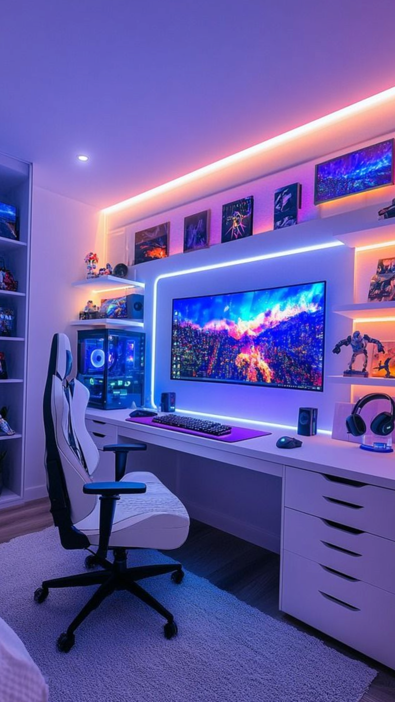

Our Mission
We believe that coding should be accessible, safe, and empowering. Theefy Coder Lab exists to: - Simplify Complexity: Breaking down advanced concepts in JavaScript, Git, and frontend development into clear, step-by-step explanations. - Promote Best Practices: Encouraging safe workflows in version control, error handling, and maintainable code design. - Foster Collaboration: Sharing solutions, documenting errors, and building a supportive environment where peers can learn together. - Spark Innovation: Exploring cloud deployment, modern web technologies, and creative projects that inspire experimentation. - Encourage Lifelong Learning: Inspiring learners to continuously grow, adapt, and refine their skills in a rapidly evolving tech landscapeWhat Makes Us Different
Unlike traditional tutorials, Theefy Coder Lab emphasizes interactive hands-on experimentation and real-world problem solving. We don’t just teach coding—we mentor, troubleshoot, and guide learners through the “why” behind every solution. Our approach blends technical precision with accessibility, ensuring that both beginners and advanced coders feel welcome. Beyond technical skills, Theefy Coder Lab nurtures creativity, resilience, and confidence. We encourage learners to embrace challenges as opportunities, to see every error as a stepping stone, and to approach coding not just as a discipline but as a craft. By combining structured guidance with open-ended exploration, we create an environment where curiosity thrives and innovation becomes second nature.
Our Values
- Clarity: Every explanation is designed to be simple, visual, and easy to follow. - Safety: We prioritize workflows that protect your projects and data. - Community: Growth is best achieved together, through shared experiences and peer support. - Creativity: Coding is not just technical—it’s an art of building, experimenting, and innovating. - Growth: We are committed to continuous learning and improvement, both for ourselves and our community. - Encourage Lifelong Learning: Inspiring learners to continuously grow, adapt, and refine their skills in a rapidly evolving tech landscapeThe Journey Ahead
Theefy Coder Lab is continuously evolving. From building personal projects like Theefy_Coder_Lab website with polished branding and community features, to experimenting with APIs, cloud platforms, and modern dynamic UI design, we are committed to pushing boundaries while staying grounded in best practices. This lab is not just about coding—it’s about collaborative learning, sharing, and growing together. Whether you’re here to master Git workflows, explore JavaScript promises, or simply find inspiration in troubleshooting stories, Theefy Coder Lab welcomes you to join the journey. Together, we will navigate the complexities of coding with clarity, build projects with safety, and grow as a community of passionate learners and creators. The future is bright, and the endless possibilities are at Theefy Coder Lab.

✨ Suggested tagline:
“Code with clarity. Build with safety. Grow with community.”© 2024 Theefy Coder Lab. All rights reserved.